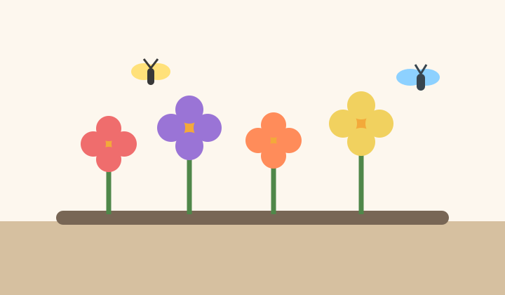

Create a Balcony That Supports Urban Wildlife

Pollinator-friendly balcony gardens combine beauty with ecological value. Even in dense city environments, flowering plants can provide nectar and shelter for bees, butterflies, and other beneficial insects. A balcony does not need to be large to make a difference. What matters most is choosing flowers that bloom reliably, avoiding harmful sprays, and keeping the space easy for insects to access.
Color and bloom timing should work together. A balcony filled with flowers that all peak in the same week may look wonderful briefly, but it will not offer support across the full season. Gardeners can improve their results by mixing early, midseason, and late blooms so there is always something available. This approach also keeps the display interesting for the human eye and creates a stronger sense of rhythm in the space.
Pollinator gardening is also a chance to connect with neighbors and community groups. People often notice flowers before they notice structure, and a bright planter can start conversations about local biodiversity, food growing, and environmental care. That social value is one reason these gardens feel so meaningful and shared in apartment settings.
Flower Ideas and Community Sign-Up
The plants below are common starting points for a balcony that welcomes pollinators while still being manageable for beginners.
- Calendula adds warm color and attracts many helpful insects.
- Lavender provides fragrance and a long blooming period in bright light.
- Nasturtiums spill beautifully from containers and are also edible.
If you would like to join a beginner balcony gardening workshop, use the form below. The form is only a class project example, but it shows how a simple contact or signup feature can support the goals of a website.
For a broader overview, return to the Home page. For edible growing ideas, visit the Herb Garden page.
Image citation: Original illustration created by Codex for this student project, 2026.